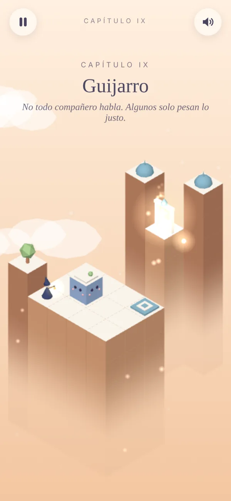
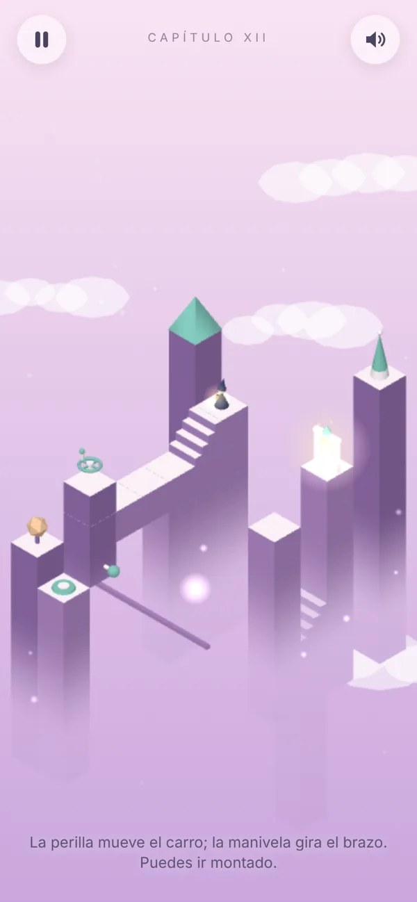
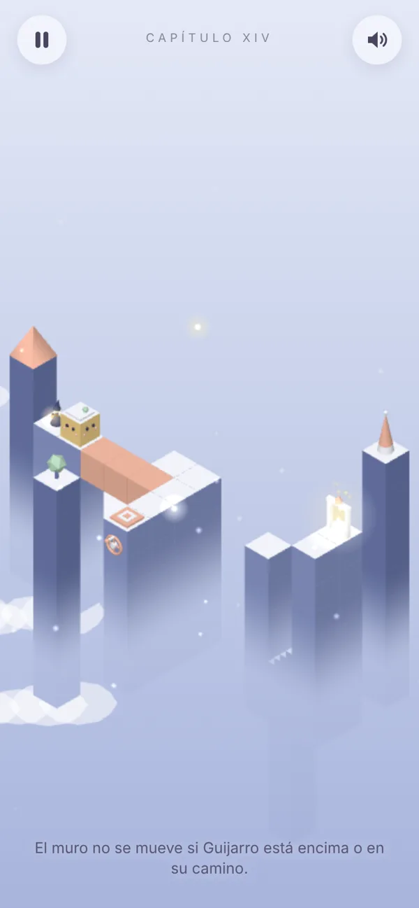
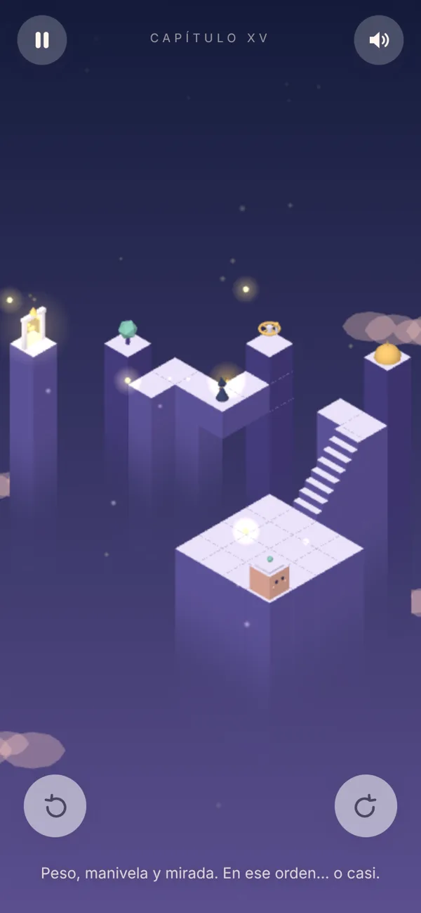

Echoes of Mist · A journey of light and perspective
Ecos de Bruma
Guide Candil and his lantern through impossible architecture, where paths only exist when you look at them just right. Turn towers, slide bridges and shift your perspective to reach the light.
Version 1.2.0 · Free APK · 229 KB · English & Spanish · Android 5.0+ · Works offline

The game
A calm puzzle made of illusions
Impossible geometry
Line up the pieces and two distant paths become one. If it looks connected, you can walk on it.
15 chapters, each harder than the last
Cranks, travelling bridges, tilting walls and Guijarro, a stubborn little block you push onto weight plates.
Calm and offline
Soft ambient music, tuned for budget phones. No ads, no internet needed; your progress stays on your phone.
Chapters
Every world, its own light
From pastel sunrise to starry night: each chapter brings its own palette, a poetic line and a glowing doorway waiting at the end.







How to install
Ready in a minute
Ecos de Bruma installs directly from its APK, without Google Play.
-
1
Download the APK
Tap “Download for Android” in your phone’s browser.
-
2
Allow the install
Open the file and, if asked, turn on “Install unknown apps” for your browser.
-
3
Play!
If Play Protect shows a warning, tap “More details” and then “Install anyway”.
Follow Candil’s lantern
Free, no ads, offline. Just you, the mist and the right point of view.
Download Ecos de BrumaInspired by Monument Valley by ustwo games. Ecos de Bruma is an independent project with original characters, levels and art, not affiliated with or endorsed by ustwo games.